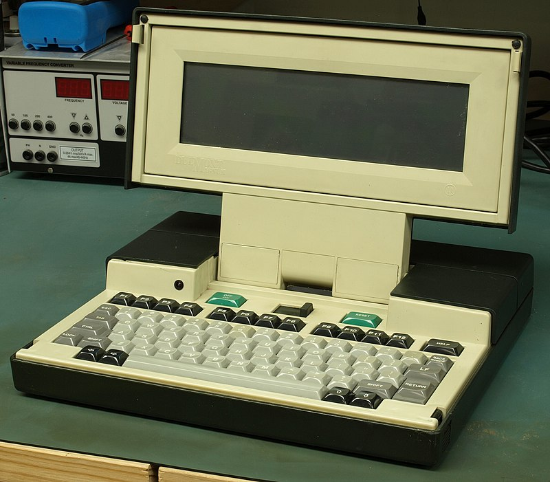
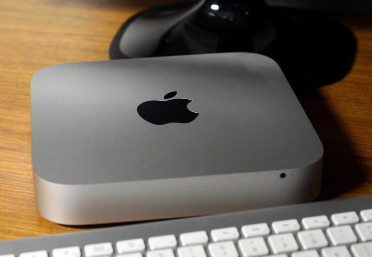
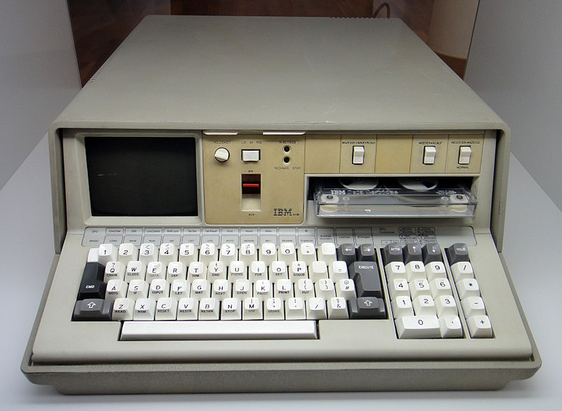

Ноутбук — це портативний персональний комп'ютер, в корпусі якого об'єднані типові компоненти ПК, включаючи дисплей, клавіатуру і вказівний пристрій (звичайно сенсорна панель або тачпад), а також акумуляторні батареї.
Ідею створення портативної обчислювальної машини «розміром із блокнот, що має плаский монітор і вміє підключатися до мереж без дротів» висунув начальник дослідної лабораторії фірми Xerox Алан Кей (Alan Key) в 1968, назвавши її Dynabook.



1979 року на замовлення NASA Вільям Могрідж (компанія Grid Systems) створив перший у світі ноутбук Grid Compass (оперативна пам'ять на ЦМД обсягом 340 КБ, процесор Intel 8086 з тактовою частотою 8 МГц, люмінесцентний екран). Цей ноутбук використовувався в програмі Space Shuttle.
Перша модель загального використання Osborne 1 (маса 11 кг, оперативна пам'ять 64 Кб, процесор Zilog Z80A з тактовою частотою 4 МГц, два дисководи 5,25 дюйми, три порти, у тому числі для підключення модему, монохромний дисплей 8,75х6, 6 см, вміщав 24 рядки по 52 символи; 69 клавіш) була створена винахідником Адамом Осборном (Adam Osborne) в 1981 і випущена на ринок за ціною $ 1795. Через маркетингову помилку, що полягала в тому, що початок продажів Osborne 1 було оголошено задовго до надходження перших машин в реалізацію, компанія збанкрутувала.
1982 компанія Compaq успішно представила IBM PC-сумісний портативний комп'ютер на базі процесора Intel 8080. З 1983 багато виробників комп'ютерної техніки вже мали власну лінійку ноутбуків (наприклад Epson HX-20). У 1984 фірма Apple випустила перший ноутбук з LCD; у 1986 IBM представила першу «трансформовану» модель ноутбука на базі процесора Intel (маса 5,4 кг, дисковод 3,5 дюйми) за ціною $ 3500.
Буквально 10 років тому питання вибору між ПК і ноутбуком взагалі не стояло – ноутбуки були рідкістю в Україні. Практично у кожного стояв невеликий комп’ютер з великим монітором. Ноутбуки ж міг собі дозволити лише невеликий відсоток населення.
Сьогодні асортимент величезний. Більшість людей вважають за краще мати у себе маленький особистий ноутбук, а у квартирі – сімейний стаціонарний комп’ютер з величезним екраном. Такий варіант, безумовно, ідеальний.
Переваги ноутбука
Мобільність. Ноутбук можна взяти з собою в університет або поїздку. Він легко складається в спеціальну сумку;
Персональність. Рідко хто купує сімейні ноутбуки. Можете не сумніватися – ця річ буде виключно вашою;
Незалежність від умов. Ноутбук без розетки тримає заряд від 2-х до 6-ти годин (в залежності від моделі);
Зручний серфінг. З ноутбуком можна лягти у ліжко, на диван або сидіти за столом з кавою. Покладіть ноутбук на коліна і включіть улюблений фільм – найкращі ліки проти безсоння вам забезпечено;
Мінімум аксесуарів. Якщо маєте бажання, ви можете купити мишу і навушники. Клавіатура, динаміки, веб-камера і тачпад – все вбудовано в машину;
Мала вага і габарити. Навіть ноутбуки категорії заміна настільного ПК можна легко перемістити в інше місце. Ноутбук можна взяти у відрядження, на дачу, у відпустку. Переміщення настільного комп'ютера в іншу кімнату / кабінет часто є проблемою, не кажучи вже про переміщення в інше місто;
Для роботи не обов'язково під'єднувати зовнішні пристрої. Ноутбук має у своєму складі вбудовані дисплей, клавіатуру і пристрій вказівки (звичайно тачпад), а до настільного комп'ютера всі ці пристрої необхідно під'єднувати окремо;
Можливість автономної роботи. Наявність акумулятора дозволяє ноутбуку працювати в умовах, коли, електрична мережа не доступна (в поїзді, літаку, автомобілі, кафе і просто на вулиці). Настільний комп'ютер може працювати автономно дуже недовгий час і тільки за наявності джерела безперебійного живлення;
Можливість підключення до бездротових мереж. Практично всі ноутбуки (за винятком деяких надбюджетних моделей) оснащені вбудованим Wi-Fi адаптером, що дозволяє підключитися до інтернету без проводів. Точки доступу Wi-Fi є в багатьох кафе, розважальних центрах, аеропортах, готелях. Існують також міські Wi-Fi мережі, які дозволяють підключитися до бездротової мережі в багатьох районах міста. Настільні комп'ютери звичайно не містять вбудованого Wi-Fi адаптера (за винятком деяких дорогих моделей і більшості неттопів), втім, для стаціонарних комп'ютерів цей недолік неістотний.
У сумі всі переваги ноутбуків перед стаціонарними комп'ютерами складають основну якість ноутбуків: Мобільність.
Ноутбук – це сучасно і практично. Але і він не без вад.
Недоліки ноутбука
Легко втратити. Досить залишити ноутбук на лаві в метро і ви можете попрощатися з ним назавжди;
Злодії. Зірвати сумку для ноута з плеча – справа 5-ти секунд. Останнім часом випадки крадіжки ноутбуків почастішали, буде дуже прикро втратити дорогого пристрою з цінною інформацією на ньому;
Механічні пошкодження. Хоча б пару раз, але ноутбук вислизне з рук, ви проллєте на нього чай або каву, упустите на клавіатуру книжку та інші неприємні моменти. А ремонт, як ми пам’ятаємо, у ноутбуків недешевий;
Неможливість самостійної збірки. Ноутбуки продаються вже укомплектованими. На відміну від ПК, де ви можете купити системник, а до нього – відповідний монітор, тут вибір невеликий. Якщо вам ідеально підходить дисплей, але не подобаються характеристики, золоту середину ви не знайдете – доведеться розглядати інші варіанти;
Висока ціна мабуть найголовніший недолік ноутбуків. Повністю укомплектований настільний комп'ютер (в комплекті з монітором, пристроями введення (клавіатурою і мишкою) і акустичною системою) рівною з ноутбуком вартості буде продуктивнішою.
Низька максимальна продуктивність. Компактні розміри ноутбуків пред'являють особливі вимоги до охолодження, тому компоненти, що використовуються в ноутбуках, мають жорсткі обмеження щодо тепловиділення, а отже і потужності. Навіть потужні ігрові ноутбуки та мобільні робочі станції не можуть зрівнятися з продуктивними настільними ПК, призначеними для таких вимогливих завдань як комп'ютерні ігри, тривимірне моделювання і проектування, рендеринг, інженерні розрахунки тощо Нечисленні дескноути виправити становище не можуть, оскільки для них діють ті ж обмеження в габаритах і тепловиділенні, що і для інших ноутбуків. Тому в дескноутах встановлюються не найпродуктивніші настільні процесори і використовуються мобільні версії відеокарт.
Обмеженість модернізації. На відміну від настільних комп'ютерів можливість модернізації ноутбуків сильно обмежена. У портативних комп'ютерах як правило передбачена можливість самостійної заміни оперативної пам'яті і жорсткого диска. Модернізація відеокарти в більшості ноутбуків не передбачена, хоча зустрічаються моделі, що дозволяють здійснити і заміну графічного адаптера. У разі необхідності заміни інших компонентів, у тому числі процесора і дисководу оптичних дисків рекомендується звертатися до кваліфікованих фахівців. У роздрібному продажі мобільні версії процесорів і відеокарт практично не зустрічаються.
Питання сумісності з різними операційними системами. Виробники ноутбуків рідко здійснюють підтримку сімейства операційних систем, відмінних від встановленої на дану модель ноутбука. Крім того, в ноутбуках часто використовуються специфічні компоненти, тому проблеми сумісності з іншими ОС виникають значно частіше, ніж для настільних комп'ютерів.
Недоліки ноутбуків, що є наслідком мобільності портативних комп'ютерів: Якість вбудованих компонентів. На відміну від настільних комп'ютерів, в ноутбук вбудовані дисплей і пристрої введення (клавіатура і тачпад). Це є безперечною гідністю ноутбуків, але разом з тим якість і зручність використання вбудованих компонентів часто невисокі. Клавіатура ноутбуків зазвичай має менше клавіш, ніж настільна (за рахунок поєднаного цифрового блоку клавіш), а розміри клавіш, особливо у субноутбуків і нетбуків, можуть бути дуже маленькими і незручними для деяких користувачів. Тачпад менш зручний, ніж комп'ютерна миша. Кут огляду і колірний обхват моніторів ноутбуків невисокі, що робить їх практично непридатними для обробки фотографій, розмір екрану в більшості моделей досить невеликий. Слід зазначити, що перераховані недоліки вбудованих елементів цілком закономірні для мобільних пристроїв і їх можна легко компенсувати підключенням зовнішніх компонентів (монітора, клавіатури, комп'ютерної миші), однак це збільшує кінцеву вартість ноутбука і трохи знижує мобільність портативного комп'ютера.
Підвищена ймовірність поломки. Мобільність ноутбуків породжує ще одну проблему, яку теж іноді зараховують до недоліків портативних комп'ютерів — велика вірогідність поломки в порівнянні з настільними ПК. Ноутбуки частіше кидають. Існує ймовірність зламати дисплей ноутбука при закритті кришки (якщо між клавіатурою і дисплеєм опиниться сторонній предмет). Якщо залити клавіатуру ноутбука якою-небудь рідиною, то велика вірогідність виходу портативного комп'ютера з ладу (у той час як у настільному комп'ютері з ладу вийде тільки клавіатура). Разом з тим імовірність поломки захищених ноутбуків зазвичай набагато нижча, ніж у настільних комп'ютерів і порівняно з промисловими комп'ютерами.
Висновок
Отже, що таке ноутбук для сучасної людини? Це така річ, без якої вже просто не обійтися. Саме він допомагає виконати масу завдань дуже швидко, замінюючи собою ціле безліч інших пристроїв. Але ноутбук незручний якщо ви:
Працюєте вдома. Хто б що не говорив, а мати комп’ютер завжди під рукою зручно і вигідно. Якщо ви – зайнятий віддалений працівник, вибір простий – стаціонарний комп’ютер;
Завзятий геймер. Ідеальні ігрові комп’ютери завжди стаціонарні. Запам’ятайте це. Якщо ви фанат ігор, то можете зібрати ігровий комп’ютер самі або купити відповідну модель у магазині;
Офісний працівник – в офісі завжди стоять ПК і недарма. Це зручно, безпечно і практично;
Подобаються фільми та передачі через Інтернет. Завжди краще дивитися кіно на великому моніторі, а не на маленькому екрані;
Живете з маленькими дітьми. Так менше шансів розбити або поламати комп’ютер.
Ну і, звичайно ноутбук стане кращим другом:
Студента. Курсову роботу, презентацію, лабораторну або просто доповідь зручніше буде показати на особистому ноутбуку, ніж приносити на флешці. А в деяких університетах взагалі немає комп’ютерів, тому ноутбук просто незамінний;
Мандрівника. Ви захочете подивитися кіно в дорозі або в готелі. ПК у вашому випадку просто нераціональний;
Фрілансера. Сучасні фрілансери воліють працювати в кафе або на природі – без ноутбука нікуди;
Відрядного працівника. Кар’єристові, який подорожує дуже туго доведеться без ноутбука з 4G-модемом;
Любителя переїжджати. Ноутбук перевезти набагато простіше, ніж стаціонарний комп’ютер. Якщо ви міняєте квартири як рукавички, ноут – ваш вихід.
Звичайно, все у світі відносно. Так, і геймер може купити ігровий ноутбук, і мандрівник – настільний комп’ютер. Слухайте себе і оцініть всі переваги і недоліки покупки. Подумайте, навіщо вам комп’ютер, і які завдання він повинен виконувати. Це виключить непотрібні витрати.